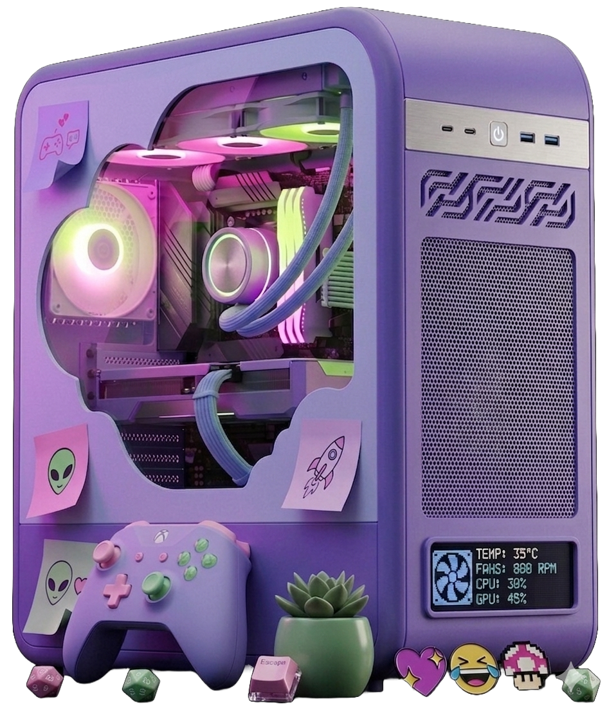

Descubra o que realmente importa em cada componente e encontre o setup ideal para o seu estilo de jogo.

Montar um PC gamer pode parecer complicado, principalmente quando você se depara com nomes técnicos e uma infinidade de opções. Pensando nisso, este projeto foi criado para ajudar jogadores que querem entender melhor o hardware e fazer escolhas mais seguras na hora de montar ou melhorar seu setup. Aqui, você encontra explicações simples, comparações e sugestões de configurações que facilitam a tomada de decisão, seja você iniciante ou alguém que já conhece o básico, mas quer ir além.